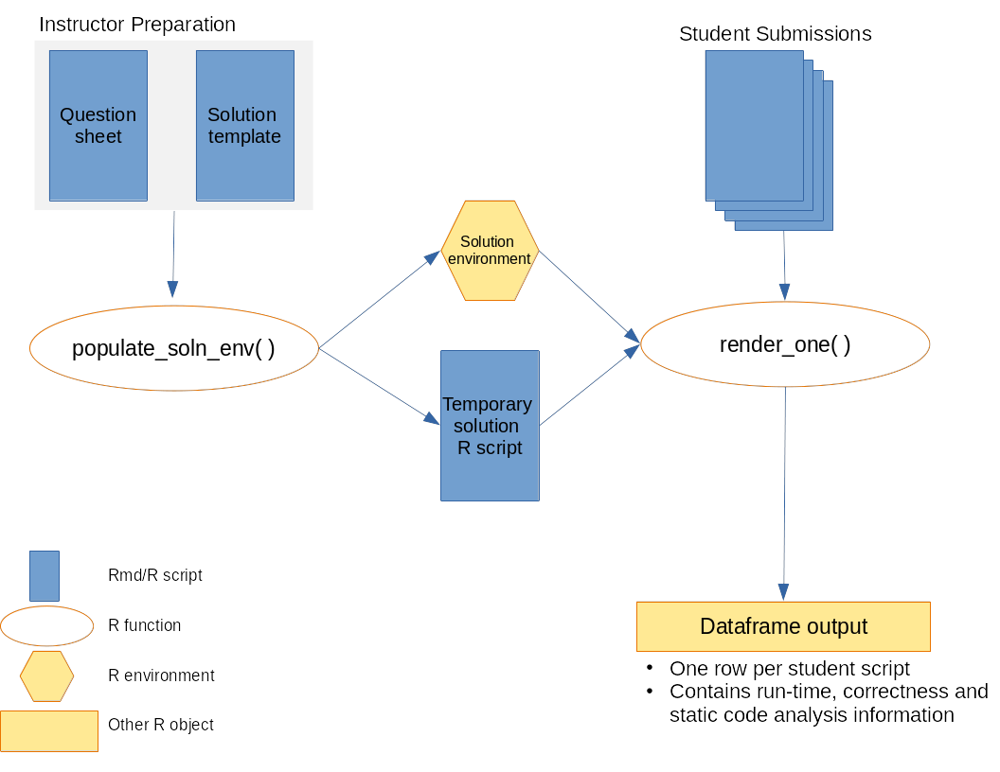

Introduction
The purpose of this package is to assist an instructor in grading R codes. The following diagram presents an overview of how the autoharp works:

To use the autoharp for grading, the instructor needs to prepare a solution template. The autoharp will help to execute the code in each student script, test the objects in them, and return a convenient dataframe, with one row per student script.
Description of Files
Thus, we begin with a simple example. We describe the assignment, solution file, and two student scripts in the subsequent sections. Following this, we demonstrate how the package can help.
The files needed to run this example can be found in the
examples directory of the autoharp
package.
list.files(system.file("examples", "example-01", package="autoharp"))
#> [1] "sample_questions_01.Rmd" "soln_template_01.Rmd"
#> [3] "student_scripts"This folder contains:
- 1 x question paper (
sample_questions_01.Rmd), - 1 x solution template (
soln_template_01.Rmd), and - 2 x sample student scripts (
qn01_scr_01.R,qn01_scr_02.R), which are in the folderstudent_scripts.
Imagine that sample_questions_01.Rmd is a worksheet that
you assign to your students. The question contains the following
stem:
Consider the following probability density function (pdf) over the support \((0,1)\):
\[\begin{equation*} f(x) = \begin{cases} 4x^3 & \text{if } 0 < x < 1 \\ 0 & \text{otherwise} \end{cases} \end{equation*}\]
Write a function called rf, that generates i.i.d
observations from this pdf. It should take in exactly one argument,
\(n\), that determines how many random
variates to return. For instance:
Now generate 10,000 random variates from this pdf and store them in a
vector named X. Your script must generate a
function named rf and a vector named X.
Student Scripts
Consider the two student submissions, that are included with the
package. Student 1 (qn01_scr_01.R) has a model solution.
However student 2 (qn01_scr_02.R) has made a few
mistakes:
- A
forloop has been used within the function, - The algorithm itself is wrong, and
- The length of the
Xvector is wrong.
Elements of the Framework
The Question Paper
The question paper details what the students need to create within their submission, which could be a plain R script, or an Rmd file. The required objects could be any R object, such as a data frame, a vector, a list, or a function. The question paper should clearly state the name of the object(s) and their key attributes.
For instance, if a function is to be created, the question paper should specify it’s name, number of arguments, names of formal arguments and the return value.
The Solution Key or Template
The solution template can be an Rmd or a quarto file. It is where you specify the things that should be checked about the student script. First of all, it should generate the correct versions of the objects. These “model” objects can then be used to check against student-created objects.
The autoharp package defines two knitr hooks, for use within the solution template:
-
autoharp.objs: This is a character vector of names of objects that are going to be used as the “model” solution. They could be correct values of something the students were asked to evaluate from their data, or a dataset, or a function. -
autoharp.scalars: These are character vectors of objects that will be generated within the chunk. These are objects that will possibly be generated using student-created objects. For example, it could be the output from running a student-written function.
To make things concrete, let’s take a look at the lines 19 to 22 from
the soln_template_01.Rmd:
```{r test01, autoharp.objs=c("rf", "X"), autoharp.scalars=c("lenX", "lenfn")}
lenX <- (length(X) == length(.X))
lenfn <- (length(fn_fmls(rf)) == length(fn_fmls(.rf)))
```The first hook communicates to the autoharp that the objects
rf and X (created in the previous chunk) are
to be used as reference objects - we may wish to compare the student
versions with these later on. In preparation, the autoharp duplicates
them as .rf and .X.
The second one informs the autoharp that the subsequent code, when
run on student-created X and rf, should yield
two values: lenX and lenfn. These should be
returned as part of the “correctness checks” for each student.
Here is another example of a chunk that will return autoharp scalars:
In short, these chunks contain normal R code that utilise the objects
created by students. However, they could also contain autoharp code that
analyses the structure of student R code. For instance, the following
autoharp-specific code would extract the number of calls
made to mutate in the student script:
```{r testxxx, autoharp.scalars=c("f1", "mutate_count")}
f1 <- rmd_to_forestharp(.myfilename)
mutate_count <- fapply(f1, count_fn_call, combine = TRUE, pattern="mutate")
```rmd_to_forestharp, count_fn_call and
fapply are autoharp functions. The variable
.myfilename is hard-coded to contain the path to the
current student script. It allows the autoharp to access the student
file from within the solution script.
How the Elements Work Together
Here is a visual depiction of how the elements work together, alongside autoharp functions.

-
First, the solution environment has to be populated. This is where the
populate_soln_envfrom autoharp comes into play. The inputs to this function are- the solution script,
- a pattern that identifies which chunks are test chunks, and
- the directory to knit the solution script in.
The return object from this function is a list of length 2, containing the solution environment, and a path to the solution script.
-
The next step is to render the student script or Rmd into a html file. This is done within the
render_onefunction of autoharp. Once the student file has been successfully rendered, the objects it generates are stored in the student_environment.Rendering of student files is carried out in a separate R process, so that paths are reset for each student. At this point, run-time statistics would already have been generated.
The next step is to run the correctness check. The “model” objects from the solution environment are then copied into the student environment. Remember, these should not conflict with what is in the student environment, because they would have a period in their prefix. For instance, the student environment will now contain
.X(from solution template) andX(from student).Correctness is assessed by running the temporary solution script (from step 1) within the student environment. The
autoharp.scalarsare then appended to the runtime statistics to generate a data frame with one row for each student script.
Package Output
Here is how the autoharp package can be used to assess the scripts.
soln_fname <- system.file("examples", "example-01", "soln_template_01.Rmd",
package="autoharp")
temp_dir <- tempdir()
s_env <- populate_soln_env(soln_fname, pattern = "test", knit_root_dir = temp_dir)
stud_script_names <- list.files(system.file("examples", "example-01",
"student_scripts", package="autoharp"),
full.names = TRUE)
corr_out <- lapply(stud_script_names, render_one, out_dir = temp_dir,
knit_root_dir = temp_dir, soln_stuff = s_env)
do.call("rbind", corr_out)